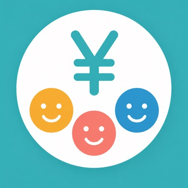
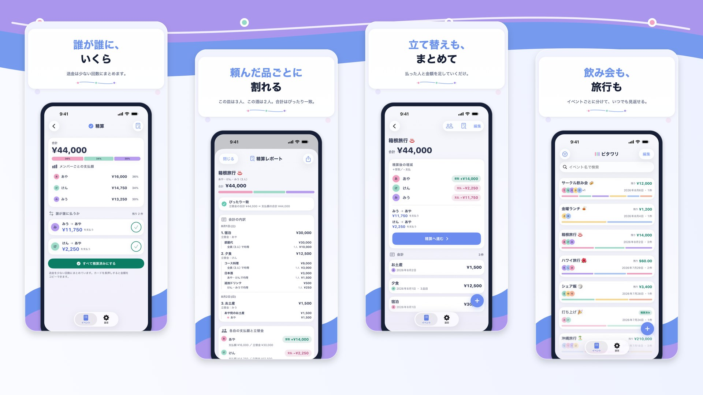

ピタワリ
割り勘、ぴたっと。
「この皿は3人、このお酒は2人」。明細ごとに負担する人を決められるので、均等割りでは無理のある会計もぴったり収まります。端数は立替額がいちばん大きい人へ寄せ、精算は少ない送金回数にまとめます。記録は端末の中だけで完結します。
iOS 18.0 以降 / iPhone 向け

ぴったり割るための、6つの道具
-
明細ごとに割る
会計を品目に分けて、それぞれ「全員で割り勘」「一部で割り勘」「特定の人」から選ぶだけ。飲んだ人・食べた人が違う席でも、そのまま計算できます。
-
合計金額は式のまま
会計の合計金額は「1200+800」「3600/3」のように、式のまま入力できます。レシートを見ながら電卓アプリへ行き来する必要はありません。
-
端数は立て替えた人へ
既定は最小単位まで正確に割り、割り切れない分は立替額がいちばん大きい人へ寄せます。日本円なら100円単位の切り上げ・四捨五入にも変更でき、通貨は6種類から選べます。
-
送金は少ない回数に
全員の貸し借りを相殺して、「誰が誰にいくら渡すか」を少ない回数にまとめます。精算した分は台帳として記録に残ります。
-
いつもの面子は登録しておく
よく一緒に精算するメンバー構成をグループとして保存できます。イベントを作るたびに名前を打ち直さなくて済みます。
-
結果はそのまま送れる
精算レポートから、結果を画像かテキストで書き出してメッセージに貼るだけ。相手がアプリを入れていなくても、そのまま伝わります（レポートの全文表示と書き出しは Pro）。
無料でイベント5件・メンバーグループ1件、「すべて精算済みにする」は通算5回まで。Pro にすると上限がなくなり、精算レポートの全文表示と書き出し・外観の切り替え（ダーク／自動）・JSON でのバックアップが使えます。
割り勘の記録は、端末の中だけ
イベント・メンバー名・金額・精算の記録は、すべて利用者の端末内にのみ保存されます。アカウント登録は不要で、当方のサーバーに集めることはありません。改善のための匿名の利用状況の計測は行いますが、メンバー名や金額そのものは送りません。詳細はプライバシーポリシーをご覧ください。
「あとで精算」を、あとに残さない。
よくあるご質問はサポートに掲載しています。お問い合わせ: tempuraapps.support@gmail.com